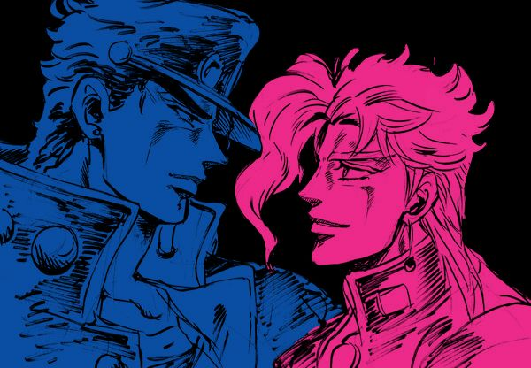
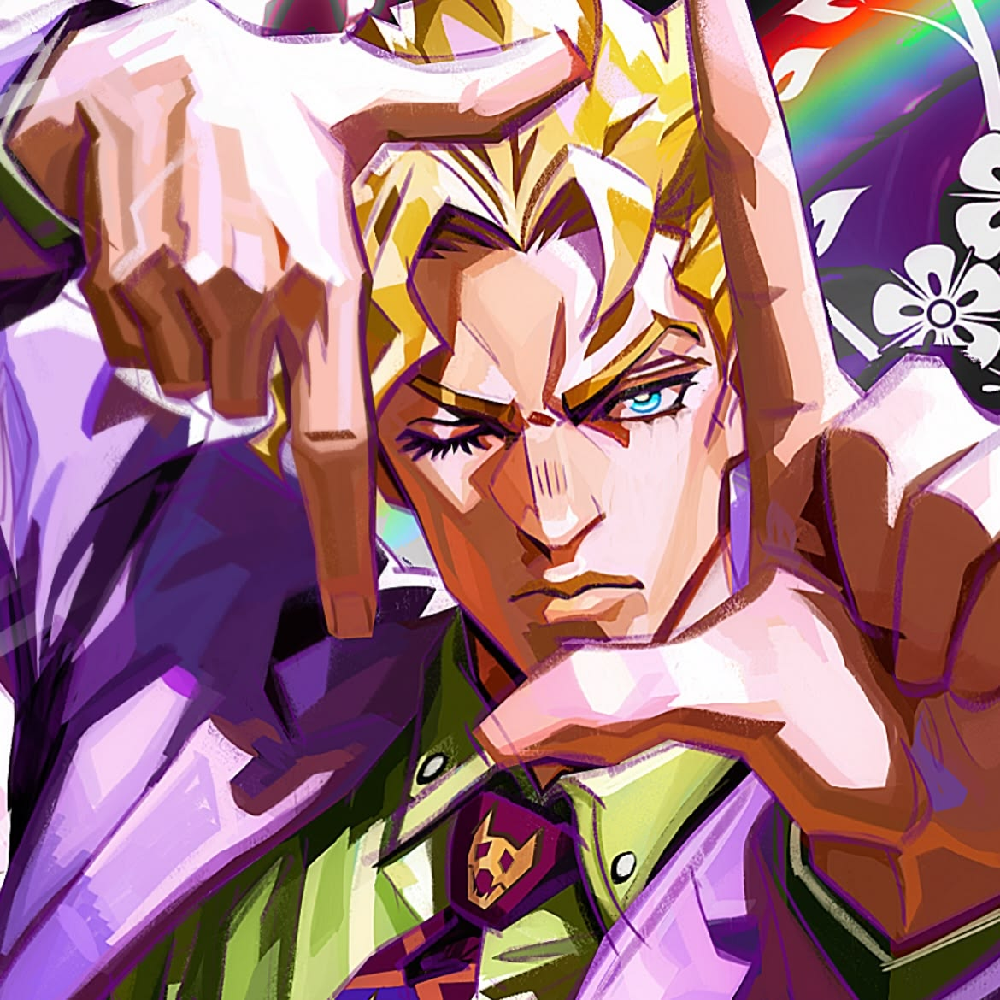

Compartilhando noticias de jojo

os ships de jojo deveria ser canonicos pois os casais gays de jojo sao uma maravilha eu acho que o araki deveria canonizar os casais gay de jojo.

a fandom de jojo é muito homofobica e ignorante sendo que jojo é um anime focado na cultara wolk mesmo que araki nao assume existe personagens gays em jojo e isso deixa jojo muito chato e sem graça de asssistir por isso falo jojo nao deveria ser assim na fandom